Getting started
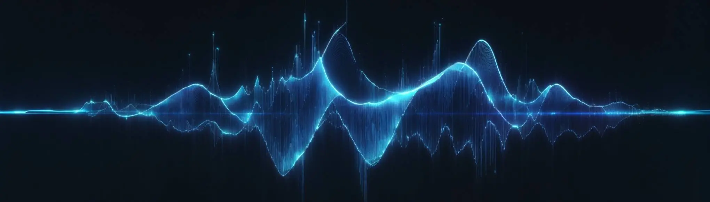
Welcome to audioware book !
Audioware is a native plugin to play custom audios in Cyberpunk 2077, without REDmod.
It's built with emphasis on getting you going fast, providing sensible defaults and seamless integration with the game while not compromising on performances.
Here's the simplest way to test it out in under 5min.
⬇️ Install
- grab Audioware latest release and unzip it in root game folder.
- make sure you have both Codeware 1.11.1+ and TweakXL 1.10.2+ installed too.
üìÑ Define audios
Create a folder e.g. MyMod for your mod, located in either depot:
- under
mods\MyMod - or
r6\audioware\MyModbut not both !
Create a manifest e.g. audios.yml.
In its simplest form, here's how it looks like:
version: 1.0.0
sfx:
my_custom_audio: some.mp3 # accepts most common formats like .wav / .ogg / .mp3 / .flac
♬⋆.˚ Use in-game
GameInstance.GetAudioSystem(game).Play(n"my_custom_audio");
If you want to dive in directly, head over to How to use? for more.
Concept
Out-of-the-box, Cyberpunk 2077's vanilla1 audio engine is built on top of Audiokinetic's WWise which is a professional-grade audio software and tools suite.
Audioware does not make any use of it and it has almost no control over it.
Here's how Cyberpunk 2077 is designed, in an overly simplified way.
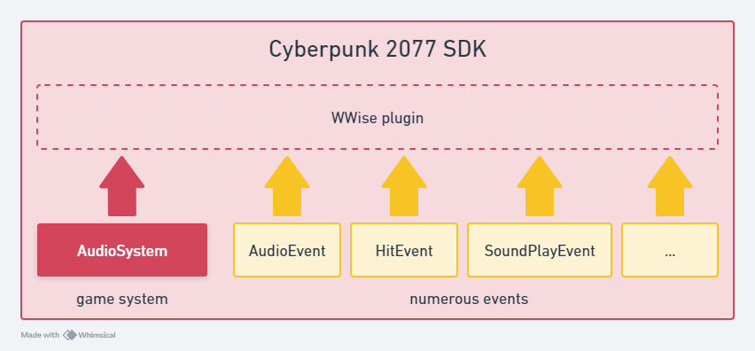
When I initially started working on Audioware I also was tempted to hook everything from Audiokinetic to allow adding custom audio to the game. At first.
But the reality is that, when you choose this path on one side you get native2 integration which is great, but on the other you then need to do everything as both WWise and the game does. Not even mentioning that you actually will have to learn how CDPR works with WWise, which is not always standard.
Professional all-in-one softwares like Audiokinetic can be dauting to use when unfamiliar and quickly become an entry-skills barrier3 for newcomers who would simply like to add sounds, play around with them, have fun and come up with an interesting mod.
I really enjoyed REDmod in the beginning but always felt frustrated after a while to not be able to alter sounds dynamically.
The audio parameters it exposes are very cool, but as far as I remember you can't seamlessly switch from one to another, and if you want multiple parameters per sound you basically have to duplicate them as many times.
Last but not least, I regularly got players complaining about it becoming overly slow when (too?) many mods use it, and it does not seem particularly appreciated among player base.
What I always wanted right from start is a tool that can get me going in under 15min.
I wanted something to be able to play easily defined sounds with parameters and audio effects.
Something Simple. Easy. yet Customizable and Fast.
And this how Audioware was initially born as a simple proof-of-concept in 4ddicted, another mod of mine. Until other modders started to notice that it worked pretty well and asked me to turn into a fully integrated native plugin.
Audioware actually uses a second alternate audio engine named kira, alongside vanilla one.
It then does integrate seamlessly, creating the illusion that there's only one and unique audio environment.
Here is, once again in an overly simplified way, how it works:
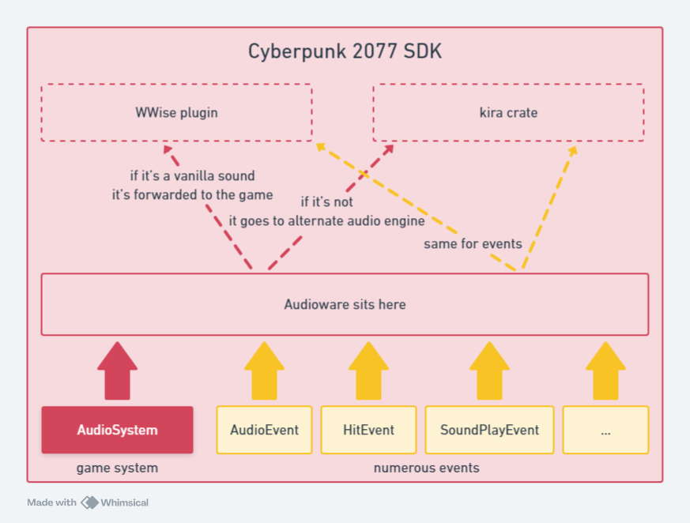
But let's process to next chapter to see how it can be used, and what it can currently do for you.
vanilla describes everything belonging to the original game, as opposed to further modifications or mods made by the community.
natively in the sense that tool, assets and game itself speaks the exact same language leading to seamless integration.
reserved to a handful of professional.
How to use?
In Getting started we already saw that adding custom sounds for Cyberpunk 2077 with Audioware literally boils down to 2 steps:
- define your audios in Manifest(s): see how to further describe your audio assets along optional settings and metadata.
- play them in-game with scripting API: using CET or Redscript to control how / when they get played, stopped, switched, etc.
All audios have some automations built-in, that you can read about in Integration
Manifest
A manifest is a simple YAML1 file to describe your sounds.
Audioware then use them to build sounds banks on game startup.
Let's take a closer look at a Manifest's anatomy.
Anatomy
A manifest is a .yml1 file located in a folder named after your mod inside one of 2 depots.
It expects a version and sections like sfx, onos, voices or music.
It must be defined:
- in a folder named after your mod (e.g.
mods\MyMod) itself located inside any valid depot (modsorr6\audioware), - alongside audio files: files can be located in sub-folders, at your discretion.
Each section contains one or multiple audio ID(s) which points to an audio file path.
When using a simple audio file, you can write it inline.
version: 1.0.0
# ⬇️ section
sfx:
# ⬇️ audio ID ⬇️ audio file path
my_custom_audio: some.mp3
But you can also write nested properties for settings:
version: 1.0.0
sfx:
my_custom_audio:
file: some.mp3
settings:
volume: 4.0 # 4 times louder!
All audio accepts multiple optional settings.
Supported audio formats
Audioware supports the following formats:
- .wav
- .ogg
- .mp3
- .flac
Generally speaking, Cyberpunk 2077 vanilla audio uses 48kHz / 16 bit PCM.
analyze with ffprobe
$ just analyze C:\\Development\\modding-cyberpunk\\4ddicted\\archive\\source\\archive\\base\\localization\\common\\vo\\civ_mid_m_85_mex_30_mt_vista_del_rey_f_1ed3f72f92559000.wem
ffprobe -i 'C:\Development\modding-cyberpunk\4ddicted\archive\source\archive\base\localization\common\vo\civ_mid_m_85_mex_30_mt_vista_del_rey_f_1ed3f72f92559000.wem' -show_format
ffprobe version 6.0-essentials_build-www.gyan.dev Copyright (c) 2007-2023 the FFmpeg developers
built with gcc 12.2.0 (Rev10, Built by MSYS2 project)
configuration: --enable-gpl --enable-version3 --enable-static --disable-w32threads --disable-autodetect --enable-fontconfig --enable-iconv --enable-gnutls --enable-libxml2 --enable-gmp --enable-lzma --enable-zlib --enable-libsrt --enable-libssh --enable-libzmq --enable-avisynth --enable-sdl2 --enable-libwebp --enable-libx264 --enable-libx265 --enable-libxvid --enable-libaom --enable-libopenjpeg --enable-libvpx --enable-libass --enable-libfreetype --enable-libfribidi --enable-libvidstab --enable-libvmaf --enable-libzimg --enable-amf --enable-cuda-llvm --enable-cuvid --enable-ffnvcodec --enable-nvdec --enable-nvenc --enable-d3d11va --enable-dxva2 --enable-libmfx --enable-libgme --enable-libopenmpt --enable-libopencore-amrwb --enable-libmp3lame --enable-libtheora --enable-libvo-amrwbenc --enable-libgsm --enable-libopencore-amrnb --enable-libopus --enable-libspeex --enable-libvorbis --enable-librubberband
libavutil 58. 2.100 / 58. 2.100
libavcodec 60. 3.100 / 60. 3.100
libavformat 60. 3.100 / 60. 3.100
libavdevice 60. 1.100 / 60. 1.100
libavfilter 9. 3.100 / 9. 3.100
libswscale 7. 1.100 / 7. 1.100
libswresample 4. 10.100 / 4. 10.100
libpostproc 57. 1.100 / 57. 1.100
[wav @ 0000023cb642ebc0] Estimating duration from bitrate, this may be inaccurate
[wav @ 0000023cb642ebc0] Could not find codec parameters for stream 0 (Audio: none ([255][255][0][0] / 0xFFFF), 48000 Hz,
1 channels, 103 kb/s): unknown codec
Consider increasing the value for the 'analyzeduration' (0) and 'probesize' (5000000) options
Input #0, wav, from 'C:\Development\modding-cyberpunk\4ddicted\archive\source\archive\base\localization\common\vo\civ_mid_m_85_mex_30_mt_vista_del_rey_f_1ed3f72f92559000.wem':
Duration: 00:00:05.94, bitrate: 103 kb/s
Stream #0:0: Audio: none ([255][255][0][0] / 0xFFFF), 48000 Hz, 1 channels, 103 kb/s
Unsupported codec with id 0 for input stream 0
[FORMAT]
filename=C:\Development\modding-cyberpunk\4ddicted\archive\source\archive\base\localization\common\vo\civ_mid_m_85_mex_30_mt_vista_del_rey_f_1ed3f72f92559000.wem
nb_streams=1
nb_programs=0
format_name=wav
format_long_name=WAV / WAVE (Waveform Audio)
start_time=N/A
duration=5.937938
size=76925
bit_rate=103638
probe_score=99
[/FORMAT]
Validation
What is worth mentioning is that Audioware will actually validate many properties of your audios on game startup, here's a non-exhaustive list.
In any case error(s) will never crash your game, Audioware will instead ignore the invalid entries and report them both in the logs at red4ext\logs\audioware-xyz.log and in CET Game Log.
each audio ID (e.g. my_custom_audio) is automatically added to game's CName pool on startup, so make sure they are truly uniques (across all game and all mods).
Audio files can be defined at your convenience at the root of your mod folder inside its depot, or any sub-folder, but they cannot be located outside.
Each audio file is briefly preloaded on game startup to make sure they will play just fine during your game session.
Each setting defined alongside audios must be valid.
e.g. specifying a
start_positionfurther than audio total duration is not!
If you would like to know exactly how validation works, consider browsing unit-tests files.
Guarantees
The reason behind these numerous validation checks: it then allows Audioware to make assumptions about your sounds bank.
Upholding these invariants guarantees for example that any audio ID that makes it into Audioware both exists and can be safely loaded without further need for runtime validation, increasing overall in-game performances!
Of course if you delete audio file(s) while your game is running, Audioware will crash as soon as called with e.g. Play. This is expected.
Let's be pragmatic 1sec: if you do so, you probably deserve your game to crash anyway üòÇ
Since 1.3.0, there's a secret DEV_ONLY build available on Github which allows to hot-reload while developping your mod. It's a "best effort" attempt and will work for most replacement(s), but it does not handle all possible edge-cases, so accept that it might crash every once in a while if you make really wide change(s). Also, be prepared to be spammed with logs.
üí° To get you going fast during mod development, you can also rely on AudioSettingsExt instead to adjust audio effects until you get them to your liking, then write them down in your Manifest.
YAML is a file format, see how to write your own.
Sections
Manifest can contain any of the following sections.
Sections provide "good defaults", a way to classify your audio assets, and even more.
SFX
sfx is used to define simple sounds.
my_custom_sfx: ./somewhere/sfx.ogg
| Default | Editable? | |
|---|---|---|
| usage | in-memory | ✅ |
| volume settings | SfxVolume | ⛔ |
Onos
onos (onomatopeia) is used to define audio with 2 files each, one per gender.
my_custom_ono:
fem: ./somewhere/ono.wav
male: ./somewhere/else/ono.wav
| Default | Editable? | |
|---|---|---|
| usage | in-memory | ✅ |
| volume settings | DialogueVolume | ⛔ |
Useful for audio that do not require any subtitle, but still have a notion of gender.
e.g. goons grunts and other onos.
Voices
voices (sometimes called voiceovers) is used to define audio with multiple files each
and optional subtitles.
| Default | Editable? | |
|---|---|---|
| usage | on-demand | ✅ |
| volume settings | DialogueVolume | ⛔ |
Simple Voice
my_simple_voice:
en-us: ./some/voice.wav
Useful for audio that have to be translated into multiple languages, but for which the notion of gender does not matter.
e.g. a vending machine promotional speech
Simple Voice with subtitle
my_simple_voice:
en-us: ./some/voice.wav
subtitle: "hello world"
Defining subtitle will automatically register them with Codeware Localization and play them alongside audio, for the proper gender and locale(s).
There is no fallback locale. Audio will not play for other locales other than the ones explicity specified.
Plural Voice
version: 1.0.0
voices:
my_plural_voice:
en-us:
fem: ./fem_intro.mp3
male: ./male_intro.mp3
subtitle: "Let me introduce myself, I'm V."
my_other_plural_voice:
en-us:
fem:
file: ./fem_wake_up.mp3
subtitle: "Looks yourself in the mirror, girl."
male:
file: ./male_wake_up.mp3
subtitle: "Look yourself in the mirror, dude."
Useful for dialogues that are both locale-based and gender-based, with subtitle.
e.g. V's dialogues.
Music
music defines songs and ambience music.
version: 1.0.0
music:
gorillaz_feel_good_inc: ./feel-good-inc.mp3
| Default | Editable? | |
|---|---|---|
| usage | streaming | ✅ |
| volume settings | MusicVolume | ⛔ |
Settings
Any sound will accept the following settings.
üóÉÔ∏è Usage
This allows to specify how audio will be handled in memory.
my_custom_audio:
file: ./somewhere/audio.wav
usage: on-demand
Each section already has its own default usage when left unspecified, see Sections.
You can choose between possible values: on-demand, in-memory and streaming.
in-memory
The audio is loaded all-at-once in-memory on game startup and kept around for the whole duration of the game session.
on-demand
The audio is loaded all-at-once each time on-demand, and never kept around.
Short sounds that you don't want to permanently allocate memory for,
or that are not meant to be played frequently.
streaming
The audio is streamed on-demand.
Long-lasting sounds that should not be loaded all-at-once in-memory and only streamed on-demand.
üîâ Volume
You can set Volume factor as follow:
my_custom_audio:
file: ./somewhere/audio.wav
settings:
volume: 2.0 # 2 times louder !
my_other_audio:
file: ./somewhere/else/audio.ogg
settings:
volume: 0.5 # 2 times softer
üïü Start time
This will play your audio with a delay.
my_custom_audio:
file: ./somewhere/audio.wav
settings:
start_time: 10s # 10 seconds delay
üîö Start position
This will play your audio further from start.
my_custom_audio:
file: ./somewhere/audio.wav
settings:
start_position: 1s # start playing directly at 1s
Note that digits with decimal(s) are not supported, so if you would like to start the audio at e.g. 1.2s, please specify 120ms instead.
üçï Region
This will only play the specified region of audio.
my_custom_audio:
file: ./somewhere/audio.wav
settings:
region:
starts: 120ms # starts directly from 1.2s
ends: 8s # ends at 8s
You're not required to specify both starts and ends.
If left unspecified:
startswill start at the beginning of the audio.endswill play until the end of the audio.
Also kindly note that entire piece of audio still need to be loaded, in terms of memory, regardless its region.
üîÅ Loop
This will loop audio until explicitly stopped.
my_custom_audio:
file: ./somewhere/audio.wav
settings:
loop: true
⏩ Playback rate
This will play your audio faster, or slower.
my_custom_audio:
file: ./somewhere/audio.wav
settings:
playback_rate: x0.5 # plays twice as slow
my_custom_audio:
file: ./somewhere/audio.wav
settings:
playback_rate: x2 # plays twice as fast
You can also specify the value in semitones as follow.
my_custom_audio:
file: ./somewhere/audio.wav
settings:
playback_rate: 2♯ # adjusts by 2 semitones
↔️ Panning
This adjust from where the audio originates from, from left to right.
my_custom_audio:
file: ./somewhere/audio.wav
settings:
panning: 0.0 # plays fully on left side
my_custom_audio:
file: ./somewhere/audio.wav
settings:
panning: 1.0 # plays fully on right side
⤴️ Fade-in tween
This will play your audio gradually fading-in.
my_custom_audio:
file: ./somewhere/audio.wav
settings:
fade_in_tween:
start_time: 1s # starts playing directly from 1s
duration: 3s # fade-in duration
Linear: # linear fade-in curve (no value needed)
my_custom_audio:
file: ./somewhere/audio.wav
settings:
fade_in_tween:
start_time: 1s # starts playing directly from 1s
duration: 3s # fade-in duration
InPowi: 3 # easing-in with power 3
Possible values for easing can be found here.
Note that fade-out can be specified as a parameter when calling methods like Stop, Switch, etc. see AudioSettingsExt.
Routing
Each section in the manifest will be routed to different tracks internally.
This is important because each track will come with different behavior.
Volume settings
Depending on which section audio is defined, it will be affected by a specific game volume setting.
| track | volume |
|---|---|
| sfx | SfxVolume |
| onos | DialogueVolume |
| voices | DialogueVolume |
| music | MusicVolume |
All audio are always affected by MasterVolume, as expected.
Parameters
Likewise each track will be affected, or not, by preset and reverb mix.
| track | preset | reverb |
|---|---|---|
| sfx | ✅ | ✅ |
| onos | ✅ | ✅ |
| voices | ✅ | ✅ |
| music | ❌ | ❌ |
Going further
This might sounds restrictive at first, but it's actually a way to provide good defaults while being easily worked-around when needed.
Imagine you want to play a song affected by underwater preset when V dives underwater.
Even if you'd usually go for music section,
nothing prevents from defining your audio in sfx instead with streaming usage for example.
API
Audioware's API integrates seamlessly with Cyberpunk AudioSystem, but it offers more.
To start using it right away, continue to the Developper Guide.
If you need a deeper understanding on how it's built, Internal docs are available.
Developer guide
The simplest way to get going uses Cyberpunk 2077's native game system called AudioSystem, as you normally would with vanilla1 sounds.
When you start requiring a little bit more control, or want to add-in some audio effects, it's usually time to reach for AudioSystemExt and AudioSettingsExt.
And you can also modify Global Parameters at anytime during the game session.
Last but not least, your sounds can be played on audio emitter(s) thanks to Spatialization.
vanilla describes everything originally belonging to the game, as opposed to further modifications or mods made by the community.
AudioSystem
Once defined, each audio ID is automatically registered on startup, making it available for scripting in-game.
If you simply want to play any custom sound, you can use AudioSystem as you normally would for vanilla sounds.
GameInstance.GetAudioSystem(game).Play(n"my_custom_audio");
It also accepts any of the usual parameters that AudioSystem's methods support.
Currently all these methods are supported:
- Play
- Stop
- Switch
- Parameter: see Parameters
Support for PlayOnEmitter since there's no way to associate a tag_name when called from vanilla.
Likewise, the methods above can only be used to play sounds on tracks, not on spatial emitters.
AudioSystemExt
AudioSystemExt is an enhanced system over Cyberpunk's AudioSystem.
This system exposes both the exact same API as its counterpart, but also similar methods with additional parameters.
For example, if you want your audio to fade-in linearly during 5secs:
import Audioware.LinearTween
// ⬇️ notice 'Ext' extension here
let system = GameInstance.GetAudioSystemExt(game);
let v = GetPlayer(game).GetEntityID();
// play audio ⬇️ with 5s linear fade-in
system.Play(n"my_custom_audio", v, n"V", LinearTween.Immediate(5.));
// later on, stop audio ⬇️ with 2s linear fade-out
system.Stop(n"my_custom_audio", v, n"V", LinearTween.Immediate(2.));
Note that any of these additional parameters only work with audio defined in Audioware.
e.g. you cannot use a fade-in tween with non-reexported vanilla audio, see below.
If you want to use vanilla audio with Audioware, you can still convert + export them from WolvenKit as described in their Wiki, then re-define them normally in your manifest.
⚠️ make sure to use a supported audio format
Going further
Combined with Codeware, you can e.g. quickly create atmosphere like so:
let weather = GameInstance.GetWeatherSystem(game);
weather.SetWeather(n"24h_weather_rain", 20.0, 9u);
GameInstance.GetAudioSystemExt(game).Play(n"milles_feuilles");
AudioSettingsExt
Earlier we saw that settings can be defined in manifest, but these settings can also be specified in scripts:
let ext = new AudioSettingsExt();
ext.fadeIn = LinearTween.Immediate(2.0);
GameInstance
.GetAudioSystemExt(game)
.Play(n"still_dre", GetPlayer(game).GetEntityID(), n"V", scnDialogLineType.Regular, settings);
Dynamic sound events
Starting from 1.7.0, Audioware exposes a new API to control sounds while they play.
Usage
public class MySystem extends ScriptableSystem {
private let sound: ref<DynamicSoundEvent>;
private final func OnPlayerAttach(request: ref<PlayerAttachRequest>) -> Void {
let player = owner as PlayerPuppet;
if IsDefined(player)
&& !IsDefined(this.sound) {
this.sound = DynamicSoundEvent.Create(n"PUT_YOUR_SOUND_NAME_HERE");
// enqueue and play sound
player.QueueEvent(this.sound);
}
}
// then, at a later point
public func UpdateVolume() {
if IsDefined(this.sound) {
// e.g. increase volume
this.sound.SetVolume(1.2);
}
}
private func OnDetach() -> Void {
if IsDefined(this.sound) {
this.sound = null;
}
}
}
Note that once a dynamic sound event has effectively been stopped, it cannot be restarted or further controlled.
Going further
Coupled with Native integration feature, here's how you can for example change the audio when the player is chased by NCPD based on the wanted level:
- first instrumental slowly fades-in after 2 stars
- then it gets replaced by a more "punchy" variant instrumental with scratches after 3 stars
- plus some slight contextual volume variations (player running, crouching, etc).
You can find the example in ChangeCombatMusic.reds.
Parameters
Audioware exposes the following parameters.
Reverb Mix
Allows to alter reverb like e.g. when in a cavern.
let value: Float; // reverb can be between 0.0 and 1.0 (inclusive)
GameInstance.GetBlackboardSystem(game)
.Get(GetAllBlackboardDefs().Audioware_Settings)
.SetFloat(GetAllBlackboardDefs().Audioware_Settings.ReverbMix, value, true);
Keep it mind that forgetting to reset reverb to normal once finished will annoy players.
For this very reason, reverb is automatically reset on each save load.
Preset
Allows to alter frequencies like e.g. underwater or on the phone.
Whenever V dives into water this preset will be automatically set to Preset.Underwater, and switched back to Preset.None whenever V eventually reaches the surface.
You can also set it manually, if needed:
let value: Preset; // possible values: None, Underwater, OnThePhone
GameInstance.GetBlackboardSystem(game)
.Get(GetAllBlackboardDefs().Audioware_Settings)
.SetInt(GetAllBlackboardDefs().Audioware_Settings.AudioPreset, value, true);
Forgetting to reset preset to Preset.None once finished will ruin players immersion.
For this very reason, preset is automatically reset on each save load.
Spatialization
Thanks to kira Audioware supports audio spatialization, which means audio that moves along its emitter, getting louder when closer and softer when further, along with left-right panning.
Registration
Audio emitter(s) must be registered before you can emit audio from them, but they are automatically cleaned up whenever emitter despawns or dies.
You must provide a tag_name which Audioware uses to track emitters internally.
GameInstance.GetAudioSystemExt(game).RegisterEmitter(emitterID, n"MyMod");
When registering spatial emitters with Codeware, use n"Entity/AfterAttach" instead of deprecated n"Entity/Attached" which can cause issues with Audioware.
Audio emitter have to be positioned so they can only be Entity or classes inheriting from it like GameObject, devices, vehicles, NPCs, etc.
You don't need to manually unregister your audio emitter(s), even if you can do so:
Audioware does it automatically whenever emitter despawns or dies. Dying emitter still emit.
You don't need to manually fade out or stop your audio on dying emitter(s), even if you can do so: Audioware does it automatically whenever emitter dies (stop) or gets incapacitated / defeated (fade-out).
Usage
Then, simply use the OnEmitter variants of the methods:
// ⚠️ emitterID and emitterCName must be both valid and non-default
GameInstance.GetAudioSystemExt(game).PlayOnEmitter(n"my_custom_audio", emitterID, n"MyMod");
// if should stop at some point...
GameInstance.GetAudioSystemExt(game).StopOnEmitter(n"my_custom_audio", emitterID, n"MyMod");
Auto-registration
Whenever you want to turn all particular entities of a kind into audio emitters automatically, you can reach out for Codeware game events.
Here's a dummy example on how to use F1 to register any audio emitter in crosshair.
import Audioware.*
public class AutoEmittersSystem extends ScriptableSystem {
private func OnAttach() {
GameInstance.GetCallbackSystem().RegisterCallback(n"Input/Key", this, n"OnKeyInput")
// listen to F1 being pressed or released
.AddTarget(InputTarget.Key(EInputKey.IK_F1));
}
private cb func OnKeyInput(evt: ref<KeyInputEvent>) {
// when F1 is released
if NotEquals(evt.GetAction(), EInputAction.IACT_Release) { return; }
// some songs defined in manifest
let sounds = [
n"my_custom_song_01",
n"my_custom_song_02",
n"my_custom_song_03",
n"my_custom_song_04",
n"my_custom_song_05"
];
// get a random sound above
let eventName = sounds[RandRange(0, ArraySize(sounds) -1)];
// prepare some settings
let tween = new LinearTween();
tween.startTime = RandRangeF(1.0, 3.0);
tween.duration = RandRangeF(3.0, 4.5);
let emitterID: EntityID;
let tagName: CName = n"MyMod";
let game = this.GetGameInstance();
// get entity V currently looks at (crosshair)
let target = GameInstance.GetTargetingSystem(game).GetLookAtObject(GetPlayer(game));
if !IsDefined(target) { return; }
emitterID = target.GetEntityID();
if !GameInstance.GetAudioSystemExt(game).IsRegisteredEmitter(emitterID, tagName) {
GameInstance.GetAudioSystemExt(game).RegisterEmitter(emitterID, tagName);
}
GameInstance.GetAudioSystemExt(game).PlayOnEmitter(eventName, emitterID, tagName);
}
}
This particular showcase is a smoke test: applying most CPU-intensive sounds (music streaming) to multiple entities in the vicinity and triggering auto-unregistration.
It aims at demonstrating that both performances stay correct (even on my low-end laptop!),
and unregistration happens seamlessly (including during simultaneous kills).
Integration
Since version 1.4.1+ audio emitters are now affected by reverb mix,
and optionally by environmental preset.
These can be opted-in/out by defining on EmitterSettings:
let settings = new EmitterSettings();
settings.affectedByReverbMix = false;
settings.affectedByEnvironmentalPreset = false;
Dynamic emitter events
Starting from 1.7.6, Audioware exposes a new API to control spatial emitter sounds while they play.
Usage
public class MySystem extends ScriptableSystem {
private let sound: ref<DynamicEmitterEvent>;
private func OnLookAt() -> Void {
let game = this.GetGameInstance();
let target = GameInstance.GetTargetingSystem(game).GetLookAtObject(GetPlayer(game));
let id = target.GetEntityID();
if IsDefined(target)
&& !IsDefined(this.sound)
// don't forget to register your emitter first
&& GameInstance.GetAudioSystemExt(game).RegisterEmitter(id, n"PUT_YOUR_MOD_TAG_NAME_HERE") {
this.sound = DynamicEmitterEvent.Create(n"PUT_YOUR_SOUND_NAME_HERE", n"PUT_YOUR_MOD_TAG_NAME_HERE");
// enqueue and play sound
target.QueueEvent(this.sound);
}
}
// then, at a later point
public func UpdateVolume() {
if IsDefined(this.sound) {
// e.g. increase volume
this.sound.SetVolume(1.2);
}
}
private func OnDetach() -> Void {
if IsDefined(this.sound) {
this.sound = null;
}
}
}
Note that once a dynamic emitter event has effectively been stopped, it cannot be restarted or further controlled.
Scene dialog lines
Audioware allows to use custom audio in Quest Scenes dialog lines, which can be freely mixed with vanilla ones.
Preambule
A scene a.k.a scnSceneResource contains multiple nodes a.k.a scnSectionNode chained together to create for example a dialogue between V and NPCs, gestures, animation or effect sequences.
Thanks to WolvenKit Editor you can already visualize Quests, including their Phases and Scenes.
Scene Section node can contain single dialog line event a.k.a scnDialogLineEvent.
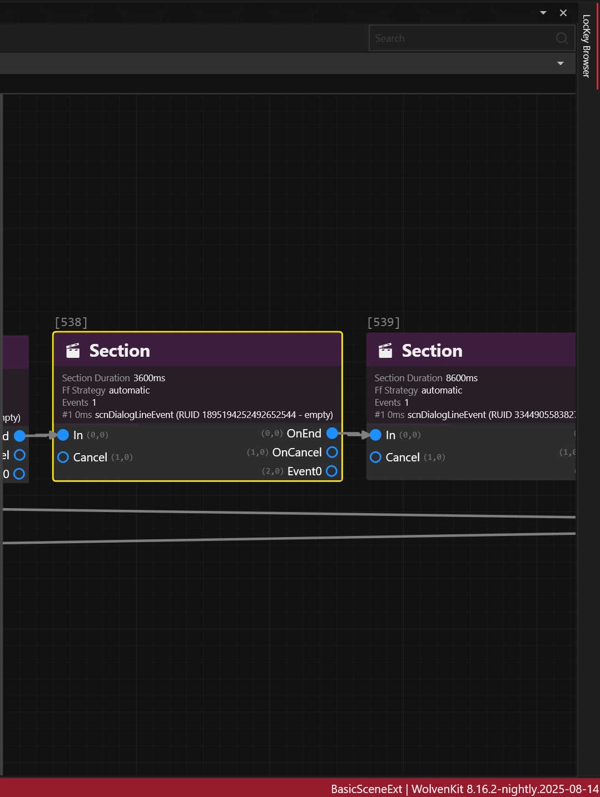
But a single Scene Section node can also contain multiple successive dialog line events.
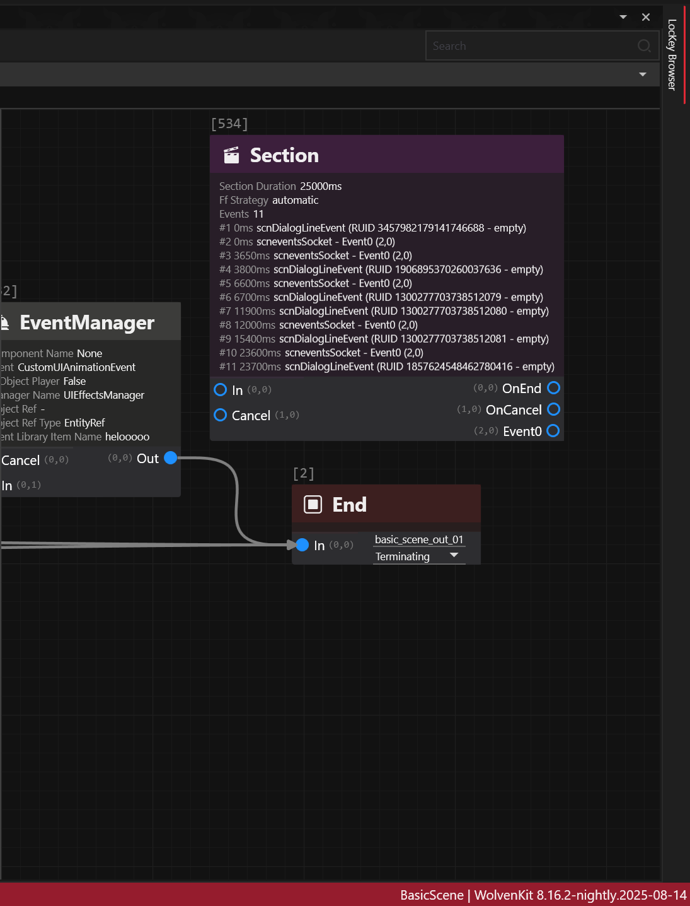
This concept applies for discussions over the holocall, during braindances, yet using different scene nodes that won't be covered here.
Creating a dialogue
This documentation won't go over the basics of .quest, .questphase and .scene as REDmodding Wiki already does.
Aside from nodes, a dialog line itself requires roughly 4 components:
- actors
- audio asset(s) for the voice
- subtitle(s) to display on-screen
- lipsync animation(s) to be performed by the actor
Implementing the first 3 ones is relatively easy while lipsync requires additional consideration, as developed below.
Consider first that, for most of the dialog lines in the game, you probably don't need any lipsync.
If you think about it one second, most of V's dialogues are made in first-person perspective (fpp).
So unless V stands nearby a reflecting surface, a mirror, or sits inside a car (where third-person perspective or tpp, can be activated) you probably don't need to worry about lipsync.
It's gonna be the same for a large portion of NPCs such as: devices, drones, droids, cyborgs and mechs do not have lips.
Scavs with digital masks, humanoids with clothing or cyberware covering their lips also fall into this category.
Since the topic is hairy, a sample example .scene is provided in the repo, on which the following documentation is directly based so that you can follow along, a courtesy of MrBill.
Actor
In order to voice a dialogue you must first define the actors.
At a minimum, there's a speaker (the one who talks), and an addressee (the one being talked to).
The actors field in the scnSceneResource defines all the actor(s), except for the player's actor(s).
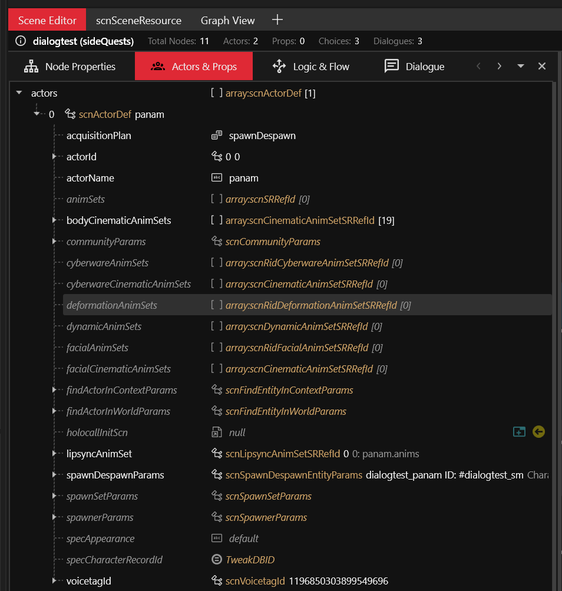
The player's actor(s) can be found under playerActors.
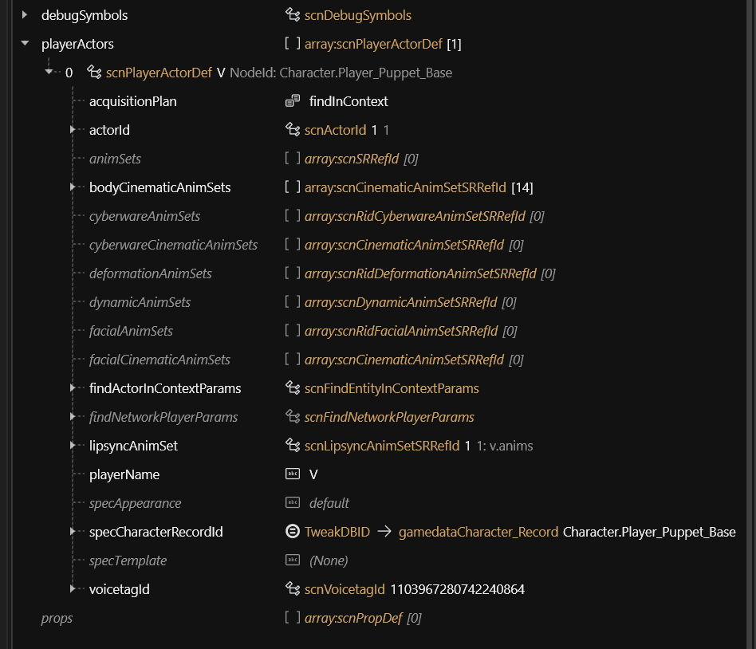
Voice
For example, here's how adding a custom dialog line audio for Panam in Audioware looks like:
# resources\r6\audioware\dialogtest\dialogs.yaml
version: 1.0.0
dialogs:
13159259729229609924:
en-us: ./en-us/vo/panam_f_b69f1500c3d57bc4.Mp3
In this snippet the RUID 13159259729229609924 is actually the hash of the hexadecimal b69f1500c3d57bc4. It is used to establish a relationship between resources. This is how the RED engine knows which subtitle to pick for a given voice, which lipsync anim to play, etc.
In the RED engine, the same naming convention is usually observed for audio assets:
{actor}_{f,m,i}_{hex}.wem e.g. panam_f_b69f1500c3d57bc4.wem
where
fstands forfemale,mformaleandiwhen the notion of gender is irrelevant.
The file path at the bottom indicates to Audioware where to load the audio asset from for a specific language, here en-us:
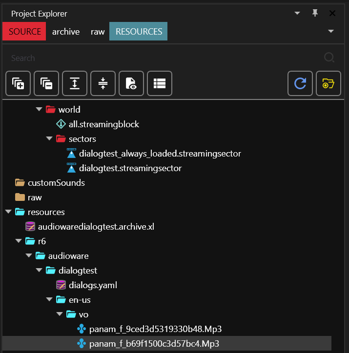
Subtitle
Audioware does not handle the subtitles for this feature, because RED engine already perfectly does.
subtitles entries
First, add subtitle entries:

Here you can notice the stringId 13159259729229609924 is the same as the one defined for the Voice.
Each entry is an (optionally genderized) subtitle for a given localization string ID (a.k.a locStringId or simply stringId).
subtitles map
Then map the subtitles:
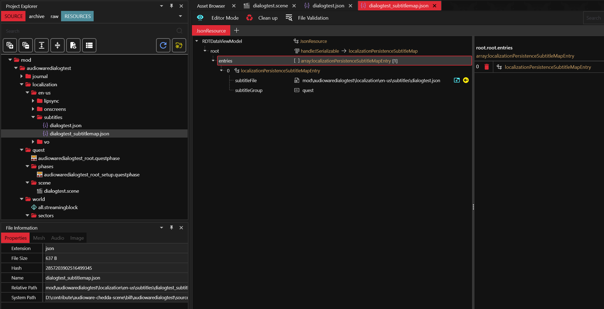
It links the actual subtitles file to a subtitles group.
subtitles localization
Finally, don't forget to register the subtitles map in the .xl manifest:
# resources\audiowaredialogtest.archive.xl
# ...
localization:
# ...
subtitles:
en-us: mod\audiowaredialogtest\localization\en-us\subtitles\dialogtest_subtitlemap.json
It links to the map for a given language.
Lipsync
At the time of writing, creating custom lipsync animation is not possible yet.
That being said, you can apply the trick that the movie industry has been using for over 50 years already when dubbing movies in foreign languages: find a lipsync animation that roughly matches both the duration and flow of the speech, and uses it.
It's not perfect, but when carefully picked it usually does the trick.
You will usually be tempted to create a custom audio for your sentence first, then search for the corresponding lipsync animations in SoundDB.
Although it might seem counter-intuitive at first, the reverse workflow generally yields a better outcome: find some interesting sentence which roughly match what you want your character to say, and then generate the closest possible sentence to match the lipsync!
lipsync animation
First define the .anims:

It contains raw lipsync animation and the rig for the 3D model.
lipsync map
Then, define the .lipmap:
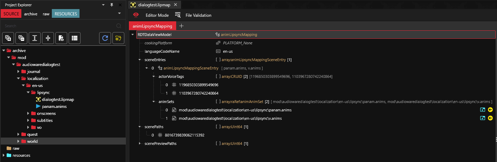
It links the actors by their voice tag to the lipsync animation and a scene for a given language.
Scene path is defined by its FNV1A64 Hash. Hash for the scene can be generated by WolvenKit Hash Tool
lipsync map localization
Don't forget to register the .lipmap in the .xl manifest:
# resources\audiowaredialogtest.archive.xl
# ...
localization:
# ...
lipmaps:
en-us: mod\audiowaredialogtest\localization\en-us\lipsync\dialogtest.lipmap
voiceover map
By default the RED engine won't play lipsync at all if there's no associated .wem(s).
This is what you can define here:

It links the localization string ID to the audio asset for each gender.
silent .wem
Another peculiarity of the RED engine is that it will start playing a lipsync anim as long as a .wem exits, but if its duration does not match with lipsync anim it will abruptly stop playing it before reaching its end.
This is why, at the time of writing, creating silent .wem with matching duration is a necessary evil.
The most common way to do it is with Wwise.
install Wwise
Go to their download section, you will also need to create an account.
create new project
You need to create a project to handle the conversion between .wav to .wem.
You can use the default suggested settings, but don't forget to specify the Conversion Settings to Vorbis Quality High.
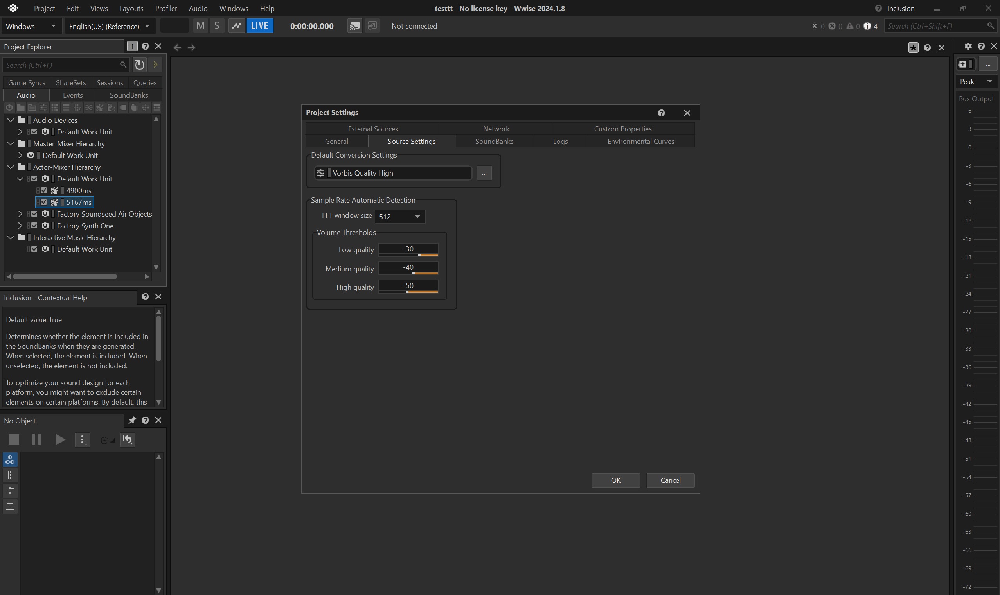
convert silent audio
Let's imagine you need a 8s long silent .wem as a placeholder for your lipsync anim.
- create an empty
Sound SFX Containerunder theDefault Work UnitinActor-Mixer Hierarchy.
- rename the container to e.g.
8000ms - import a silent
.wav: for convenience you can find a 1h-long .wav in the repo, a courtesy of DBK, that you can simply trim to the appropriate duration. 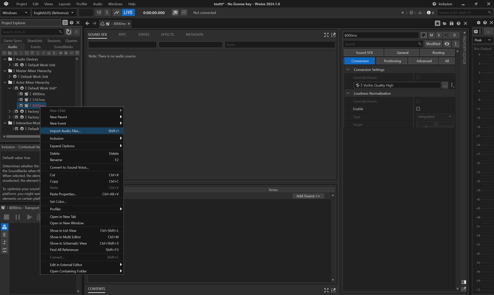 - don't forget to use
Sound SFX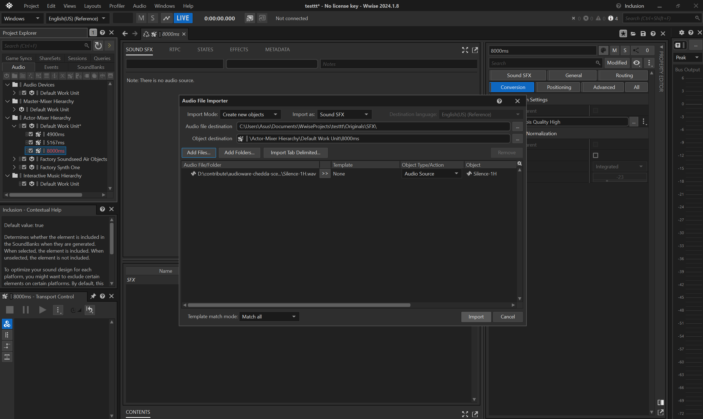 - if you need to do multiple silent
.wemof different durations, it is fine to reuse the same asset. 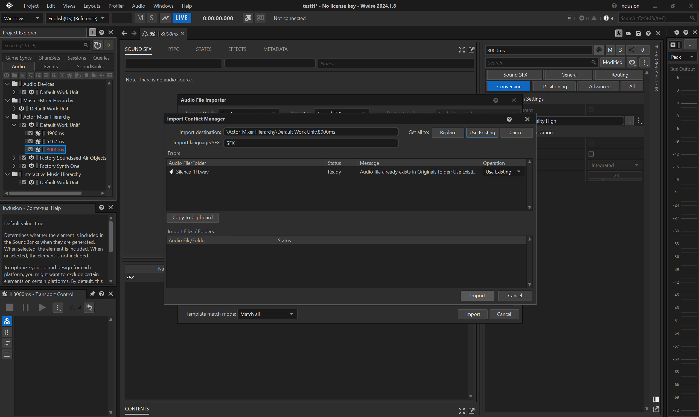 - then trim the audio, e.g. to
8seconds.
- before converting, make sure the
Conversion Settingsfor the container is set toVorbis Quality High
- convert the trimmed
.wavto.wem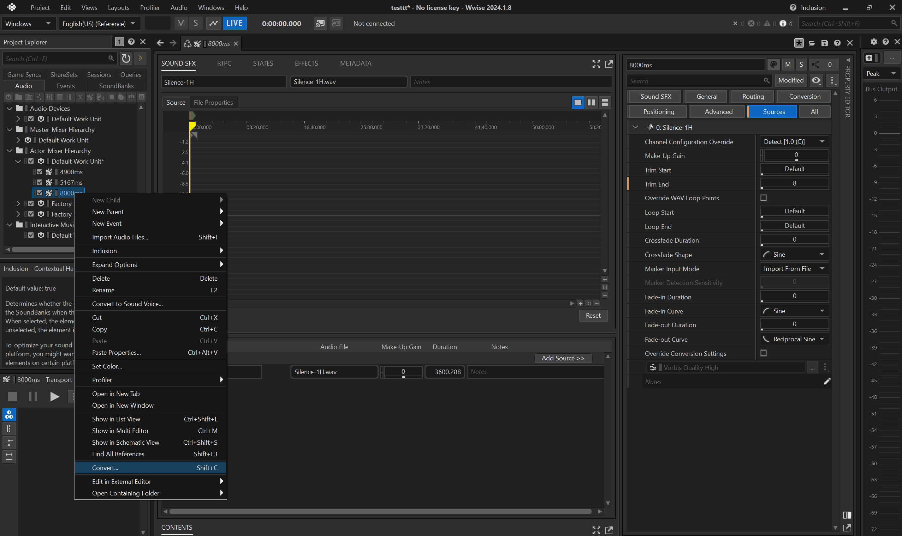 - copy the converted
.wemfrom Wwise cache (.cachefolder by default). Each asset is identified by its hexadecimal, so it's important to select the appropriate one, usually the latest.
- finally paste it in your WolvenKit
archive.
voiceover map localization
Don't forget to register the .json in the .xl manifest:
# resources\audiowaredialogtest.archive.xl
# ...
localization:
# ...
vomaps:
en-us: mod\audiowaredialogtest\localization\en-us\vo\voiceovermap.json
string id variants map
Last but not least, there's an additional file which contains the duration (or length) of the string IDs.
If you browse vanilla files, you can find it under e.g. base\localization\en-us\stringidvariantlengthsreport.json.
At the time of writing ArchiveXL does not support creating custom ones just yet, so here's how you can do with Codeware instead:
class ATStringidVariantLengthsReportService extends ScriptableService {
private cb func OnLoad() {
GameInstance
.GetCallbackSystem()
.RegisterCallback(n"Resource/PostLoad", this, n"OnPostLoad")
.AddTarget(
ResourceTarget.Path(r"base\\localization\\en-us\\stringidvariantlengthsreport.json")
);
}
private cb func OnPostLoad(event: ref<ResourceEvent>) {
let resource: ref<JsonResource> = event.GetResource() as JsonResource;
let map: ref<locVoiceoverLengthMap> = resource.root as locVoiceoverLengthMap;
let panamline1: locVoLengthEntry;
panamline1.stringId = HashToCRUID(13159259729229609924ul);
panamline1.femaleLength = 4.9;
panamline1.maleLength = 4.9;
ArrayPush(map.entries, panamline1);
}
}
Showcase
And here's the result, thanks to MrBill for the .scene comparing:
| sentence | audio | lipsync |
|---|---|---|
| vanilla | vanilla wem | vanilla |
| vanilla | audioware mp3 | vanilla |
| modded | audioware mp3 | vanilla |
Overview
Ok, this was a mouthful!
Here's a quick schema summarizing the resources and their dependencies.
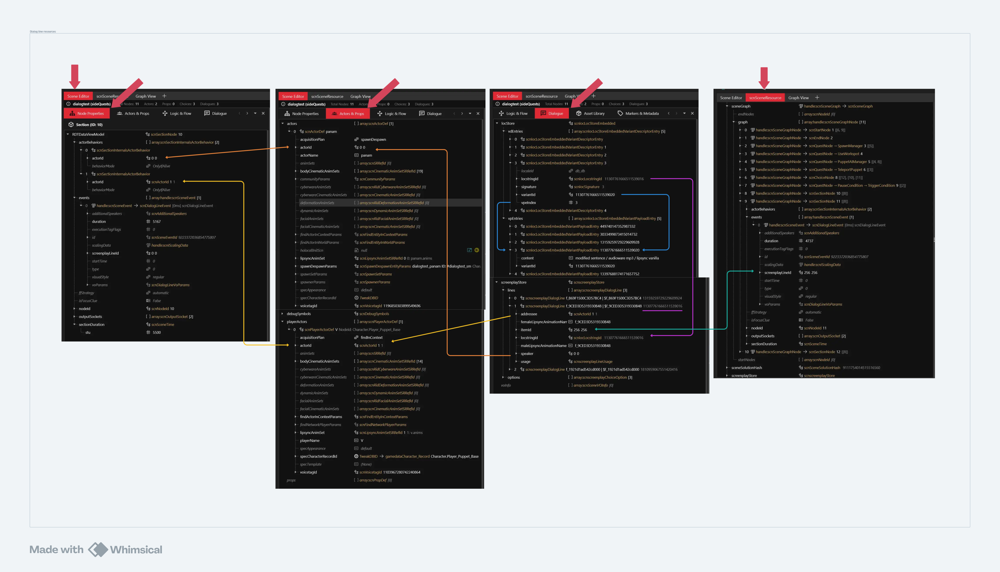
Big tokens of appreciation to MisterChedda, MrBill, DBK and Dedra without whom this feature would probably have never been finished!
Native sounds integration
Starting from 1.6.0, Audioware allows to listen and/or mute any vanilla audio event at runtime.
As a matter of fact, this means you can also replace any vanilla audio, including temporarily.
This also means you can find informations about any event, including the ones that lack some on SoundDB.
Native audio events callback system
Its callback system, albeit more simplistic, is very similar to Codeware's CallbackSystem, so you can feel at home.
Both RegisterCallback and RegisterStaticCallback first parameter is the audio event name, which can be found in scripts, assets, or even conveniently SoundDB.
Register callbacks
Let's take for examples game_occlusion and Mixing_Output_Cinema.
class MyService extends ScriptableService {
private cb func OnLoad() {
let system = new AudioEventCallbackSystem();
// listen to any 'game_occlusion' audio events
system.RegisterCallback(n"game_occlusion", this, n"OnOcclusion");
// listen only to 'Mixing_Output_Cinema' audio events of type 'Play'
system
.RegisterCallback(n"Mixing_Output_Cinema", this, n"OnMixingOutput")
.AddTarget(EventTarget.ActionType(audioEventActionType.Play));
}
private cb func OnOcclusion(event: ref<SoundEvent>) {
FTLog("occlusion changed!");
}
private cb func OnMixingOutput(event: ref<PlayEvent>) {
FTLog("play mixing output!");
}
}
As with Codeware's, it can register callbacks to class member or static methods, filter targets to be notified about and define whether callback are automatically unregistered when a game session (by default), or persist for as long as the game runs. Audioware just does not expose additional options like CallbackRunMode yet.
No matter their initial type and origin, the final audio event types roughly match audioEventActionType enum, but here's the twist: when the game dispatches events, they are not played directly as-is.
They are enqueued first, then depending on many factors happening in-game (distance from the player, velocity, number of concurrent sounds already being played, etc) they can be played, rescheduled or simply cancelled. Their fields can also change all throughout processing until final play.
- it's worth noting that
PlayandPlayAnimationevents are ultimately either played from memory (a.k.aplayfrom the sound engine's perspective) or from an external file (a.k.aplay_external). - another type of play event exist in the sound engine but not in scripting APIs:
PlayOneShotfor short "fire and forget" sounds like weapon firing for example. - likewise, there's both
SetParameterandSetGlobalParameterevents, even ifSetGlobalParameteris not a variant ofaudioEventActionTypeenum.
For this reason, Audioware exposes an additional enum which reflects its implementation in the sound engine: EventHookType, which can be used when registering callbacks:
let system = new AudioEventCallbackSystem();
// listen to 'game_window_in_focus' global parameter event
system
.RegisterCallback(n"game_window_in_focus", this, n"OnWindowsInFocus")
.AddTarget(EventTarget.HookType(EventHookType.SetGlobalParameter));
Audioware conversion from audioEventActionType to EventHookType is "best effort" only.
Mute native audio events
Audioware also allows to mute any native audio event.
Note that muted audio events can still be listened to.
For example, to completely mute Cyberpunk's intro we need:
let manager = new AudioEventManager();
// mute 'cp_bumpers_temp_sfx_music_start' of any type
manager.Mute(n"cp_bumpers_temp_sfx_music_start");
// mute 'cp_intro_temp_sfx_music_start' of type 'Play'
manager.MuteSpecific(n"cp_intro_temp_sfx_music_start", audioEventActionType.Play);
// mute 'cp_intro_temp_sfx_music_stop' of type 'StopSound'
manager.MuteSpecific(n"cp_intro_temp_sfx_music_stop", audioEventActionType.StopSound);
Muting some audio events can utterly break the game, at least temporarily: it will get back to normal the next time you run the game without the mutes.
The most disruptive audio events are SetSwitch, SetParameter and SetGlobalParameter. For example, muting SetSwitch with vo audio event name will prevent dialogues audio from playing at all (but not their subtitles).
So experiment freely, but be careful with what you release!
Going further
Here's a quick demo showing how to replace Cyberpunk intro music with a different song.
You can find the example's code in ChangeIntro.reds.
Docs
The traditional Rust docs can be found hereü¶Ä, but they are still being written and rather incomplete at the moment.
It merely contains implementation details, so if you're more interested in using Audioware right away please head back to the Developer Guide.
Integration
How well engine matches our expectations when it comes to integrate seamlessly with Cyberpunk 2077.
Let's review what you get for free.
üîâ Game volume settings
We've already seen that custom audio are affected by player's game volume settings.
⏯️ Dynamic pause/resume when in menus
All audios will be properly paused when entering any menu,
and resumed when back in-game.
Because the resume function in the engine simply resume any non-stopped sound,
sound(s) that were currently stopping with a fading-out will be entirely resumed,
not resuming their fading out as you could expect.
Providing this feature out-of-the-box requires keeping track of more state, so it is not currently implemented.
Remember that nothing prevents you to use AudioSystem / AudioSystemExt while in menu, so you can work around this limitation and implement your own logic there.
üèä‚Äç‚ôÇÔ∏è Dynamic underwater preset
As previously stated, audio will dynamically have its frequencies adjusted by Underwater preset whenever V enter or exit water, for the tracks where it makes sense.
This is currently not implemented for cars.
üèä‚Äç‚ôÇÔ∏è Dynamic time dilation
Since 1.3.0, audio will dynamically have its pitch adjusted whenever time dilation changes (e.g. when using Sandevistan).
You can also opt-out on a per-sound basis.
üßπ Clean game sessions
Spatial scene along with its emitters, every track and currently playing sounds will be completely stopped and reset on every save load.
You don't need to worry about memory leaks.